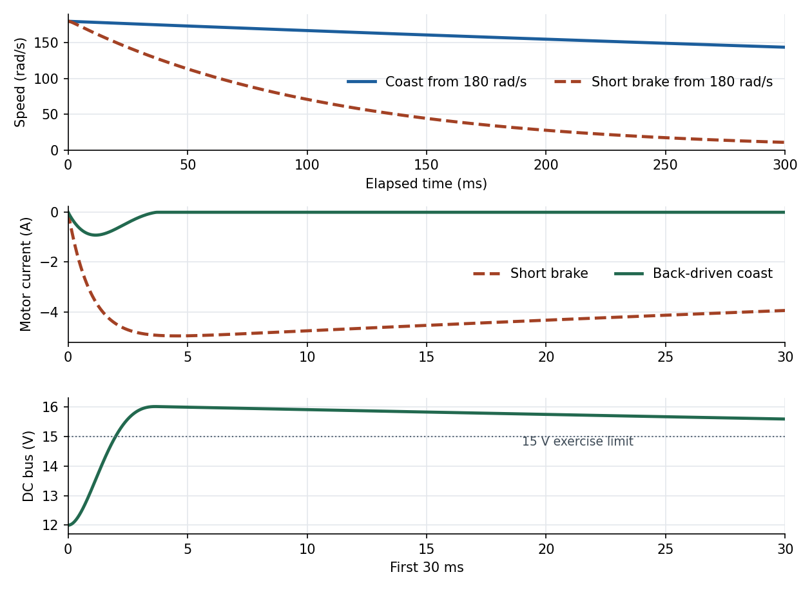

Measure motor braking current and DC bus rise
A robot wheel can slow with its outputs off, brake through a winding current or feed power back into the supply. Use the current direction and rail voltage to tell which case you have.
Predict which path takes the energy
Download the ngspice motor and bridge model. The three model branches have the same winding, torque constant, inertia and friction. Each begins with a charged 12 V bus capacitor and zero winding current. The first two shafts start at 180 rad/s. The third represents a shaft already driven by its mechanical load to 280 rad/s. The simulation starts after the drive command has been removed.
| Branch | Bridge and motor conditions | Predict a measurement |
|---|---|---|
| Coast | Outputs off. Initial back EMF is 10.8 V. | Check speed after 300 ms and look for a rise on the bus. |
| Short brake | Both low-side switches on. Initial back EMF is 10.8 V. | Find the signed winding-current peak while its two terminals are held near ground. |
| Back-driven coast | Outputs off. Initial back EMF is 16.8 V. | Trace a loop through the motor, two bridge diodes and the bus capacitor. Check if the rail crosses 15 V. |
The netlist reports winding current as positive from terminal A through the motor toward terminal B. Positive current produces positive torque in the sign convention. While speed stays positive, negative current produces braking torque. In short brake the current circulates locally through the winding and low switches. In back-driven coast, the diode path conducts when the motor voltage can push current against the bus and both diode drops. Texas Instruments · Bridge recirculation paths.
Run and measure the independent cases
ngspice -b motor-braking.cirThe model uses 2 Ω and 2 mH for the winding, a 0.060 V/(rad/s) back-EMF constant, a 0.060 N·m/A torque constant and 0.0002 kg·m² inertia. The speed outputs use 1 V of simulation signal per rad/s. The current outputs use 1 V per A of winding current. Divide the motor’s back EMF by the short-loop resistance to estimate the initial brake current after the electrical transient. The current begins at zero and approaches the estimate as the shaft is already decelerating.

Check the signs, speeds and rail limits
The coast branch is still at 143.73 rad/s after 300 ms. Short brake reaches 10.82 rad/s and its winding current reaches −4.97 A. Both buses stay near 12 V. The back-driven branch sends a brief negative winding current into its diode path with minimum current −0.92 A. The 470 µF bus reaches 16.01 V in about 3.64 ms, above the exercise’s 15 V limit. Its peak extra stored bus energy is ½ × 470 µF × (16.01² − 12²) ≈ 26 mJ.
Try a larger bus capacitor and a source that can sink
- Save a copy and set
bus_cap=2200u. Compare the peak and the time to the peak. The larger capacitor reaches about 15.35 V at 25.75 ms and still exceeds the exercise limit. - In a different copy, keep 470 µF and replace
max(0, (12-v(vbus))/0.10)inBsourcewith(12-v(vbus))/0.10. The model source can now absorb current as the voltage rises above 12 V. The measured peak drops to about 12.15 V for this particular model. - Leave a margin in the real design for supply limits, repeated braking, capacitor voltage and ripple ratings, driver current and actual energy absorption. Capture signed current and bus voltage close to the driver. Log both alongside a motion signal when diagnosing a drive that trips only on deceleration.
The netlist models selected current paths with ideal switches and a simplified supply. A real driver may use a PWM state that returns energy even when static back EMF is less than the source voltage. Use that driver’s switching and protection behavior when transferring this result to a system. Texas Instruments · Regeneration and DC motor supply rise.
P148 · Diagnose an industrial axis from command and feedback traces